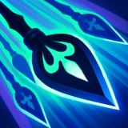

SKILL 1
Instrument of Fate
Dante throws four spectral spears at multiple enemies. Each spear deals Physical Damage and pushes its target backward.
The Skill scales from Dante's Physical Attack. However, damage represents only part of its value.
Repeated knockback changes enemy positioning and can compress multiple heroes closer together, creating opportunities for allied abilities that benefit from grouped opponents.
Four spectral spears · Physical Damage · Knockback
Strategic advantage: Instrument of Fate allows Dante to disrupt the opposing formation while dealing damage and creating opportunities for the rest of his team.
Dante increases the Dodge of all allies for seven seconds. The ability scales from his Physical Attack.
Against Physical Damage, successful Dodges prevent incoming attacks from connecting. For Dante, however, Dodge also has a direct connection to his offensive mechanics.
By increasing the Dodge of the entire team, Foresight can create additional opportunities for Retribution to activate.
Teamwide Dodge increase · Duration: 7 seconds
Strategic advantage: Physical Attack investment improves more than Dante's offensive output. It also supports one of his most important teamwide defensive abilities.
Whenever Dante or one of his allies successfully Dodges damage, Dante can conjure a spectral spear and launch it at the nearest enemy.
The spear deals Physical Damage and pushes the target backward.
This mechanic creates offensive opportunities independently of Dante's ultimate. Successful Dodges can contribute to additional spear pressure without requiring him to wait for a full Energy bar.
Successful Dodge → Reactive spear → Damage + Knockback
Strategic advantage: Retribution is the connection between Dante's defensive support and his offensive battlefield disruption.

SKILL 4
Shackles of Weakness
Whenever a spectral spear from Instrument of Fate or Retribution hits an enemy, Dante reduces that hero's Main Stat for seven seconds.
Strength heroes lose Strength, Agility heroes lose Agility, and Intelligence heroes lose Intelligence.
The ability scales from Dante's Physical Attack, creating another important reason to prioritize his offensive development.
Main Stat reduction · Base duration: 7 seconds
Strategic advantage: Dante's spears do more than deal damage and reposition enemies. They also weaken the attributes supporting the opponent's overall performance.
THE DANTE MACHINE
Dodge Feeds Offense
Foresight creates additional Dodge opportunities. Successful Dodges can activate Retribution, which produces more spectral spears, damage, knockback and Main Stat reduction.
FORESIGHT→DODGE→RETRIBUTION→SPECTRAL SPEARS→KNOCKBACK→MAIN STAT REDUCTION